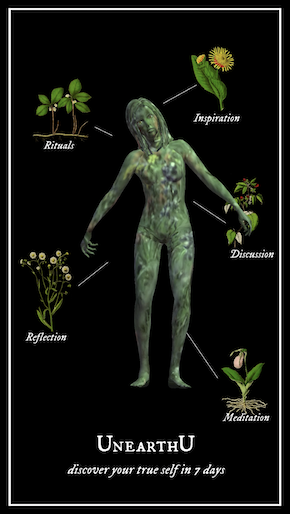
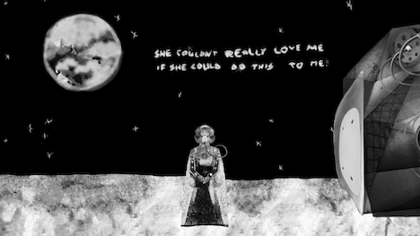
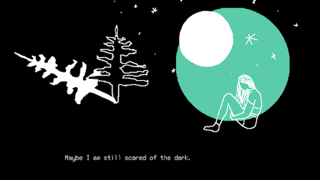

about
Kara Stone is an artist and scholar interested in the affective and gendered experiences of psychosocial disability, debility, and healing as it relates to art production, particularly videogames. Her artwork has been featured in The Atlantic, Wired, and Vice. She is a member of the Different Games Collective. She holds a BFA in Film Production and master’s degree in Communication and Culture from York University, and a PhD in Film and Digital Media with a designated emphasis in Feminist Studies at University of California at Santa Cruz. She is currently an Assistant Professor at Alberta University of the Arts.
art works
UnearthU (2021) 7 day wellness journey made from found footage.
Ritual of the Moon (2019) A 28 day experience about loneliness, destruction, and healing.
the earth is a better person than me (2018) A visual novel about sex with the earth.
Sentient sisters (2018) Print’n’play with Siri, Alexa, or Google Assistant.
Humaning (2017) An interspecies tabletop role playing game
Swallow (2016) Experimental found footage documentary about mental health and guts.
Live Among Ghosts (2016) With Haunts Collective. Interactive installation of a deconstructed and re-crafted computer.
Little Pharm (2013-2016) Various plants in used anti-depressant bottles.
(un)done (2015) With Milin Li and Amanda Tom. Two-player wearable game about falling in and out of love.
Cyber Sext Adventure (2015) Cyber sex with a bot
Cyclothymia (2015) Narrative game about astrology and emotional phases
Feminist Confessional (2015) Twine game – Confess your anti-feminist sins and repent.
Techno Tarot (2014) Robot reads your tarot cards.
Sext Adventure (2014) sexting text adventure game
Parts to Remember (2014) Interactive found footage of an exploration of somatic memories
Cyborg Goddess (2014) Choose your own cyborg or goddess adventure game
Medication Meditation (2014) Videogame about the daily mundanities of life and health maintenance.
DIY Body (2013) Crafting female organs and body parts using traditional feminine crafts.
Polaroid Panic (2012) Pictures collected from three months worth of panic attacks.
public talks
Let’s Play UnearthU with Kara Stone. Mackenzie Art Gallery, Livestream. Regina, Canada. July 2nd 2020. https://www.facebook.com/watch/live/?v=225417648426221&ref=watch_permalink
Art + Anxiety series at Inter/Access Gallery, “Reparative Games: Mental Illness and Game Art”. June 27 2019. https://www.facebook.com/watch/live/?v=423097744948619&ref=watch_permalink
Mental Illness and Videogames, on the Indie Soapbox at the Game Developers Conference. San Francisco, California March 18-22. 2019. https://www.gdcvault.com/play/1025698/Indie (at 51:05)
Reparative Game Design. Sammies Showcase at University of California, Santa Cruz. June 9 2018. https://youtu.be/k3x6QU0Mqgc?t=2153
Ritual of the Moon: Queer Time and Game Design at Queerness and Games Conference. USC, Los Angeles. April 1-2 2017 https://www.youtube.com/watch?v=_G6p8dAscTk
Function Keys at Centre[3], Affective Play. Hamilton, Canada. November 11-13th 2016 https://www.youtube.com/watch?v=4HedFz5UHlQ
Fuck Games: Sex/uality and Game Design, History of Gender in Games Conference, Montreal. June 26-27 2015 – https://www.youtube.com/watch?v=8-jcBD1HT4c
games on app stores
itch.io: https://karastone.itch.io/
steam: https://store.steampowered.com/search/?developer=Kara%20Stone
iOS app store: https://apps.apple.com/us/developer/kerilee-stone/id1166255478
google play: https://play.google.com/store/apps/developer?id=Kara+Stone&hl=en&gl=US
publications
Stone, Kara. “Self Care as a Game: Psychosocial Disability and Apps that Heal.” Diseases in Digital Games: Theories, Topics, Analyses. Edited by Arno Görgen and Stefan H. Simond. Transcipt + Medical Humanities. https://drive.google.com/file/d/14aehr792Lt6i9ecsxyTbMa1zQ-943fWZ/view?usp=sharing
Marcotte, Jess and Kara Stone. “Questions on Queer Game Design.” Widerscreen. Vol. 1 No. 2, 2019. http://widerscreen.fi/numerot/2019-1-2/
Stone, Kara. “What Can Play: The Potential of Non-Human Players”. Pivot: A Journal of Interdisciplinary Study and Thought. Vol 7 No 1 (2019): Muddied Waters: Decomposing the Anthropocene. https://pivot.journals.yorku.ca/index.php/pivot/article/view/40291
Stone, Kara. “Time and Reparative Game Design.” Game Studies: The International Journal of Computer Game Research. Vol 18, 3. December 2018. http://gamestudies.org/1803/articles/stone
Stone, Kara. “Ritual of the Moon: Time and Reparative Game Design.” First Person Scholar. January 2018. http://www.firstpersonscholar.com/ritual-of-the-moon/
Driver, Susan, Mel Patenaude, Kara Stone. Engaging Affects, Thinking Feeling: Social, Political and Artistic Practices. Cambridge Publishing. 2016
Stone, Kara. “Sext Adventure,” Guts Canadian Feminist Magazine, Issue 2, Winter 2014/2015 http://gutsmagazine.ca/issue-three/sext-adventure-2
Stone, Kara. “Naturally Crazy: Agency and Affect in One Flew Over The Cuckoo’s Nest and Girl, Interrupted,” Health Tomorrow, Interdisciplinarity and Internationality. Vol 2, No 1 (2014)
  
Contact:
Write to me at kstone1@ucsc.edu or follow me on Twitter or Instagram